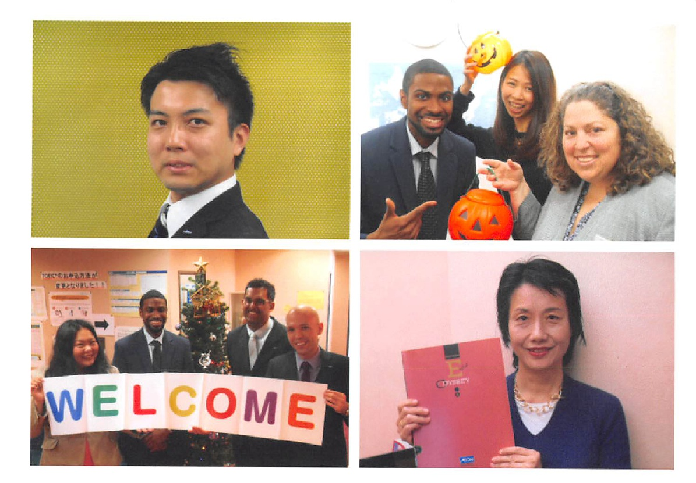
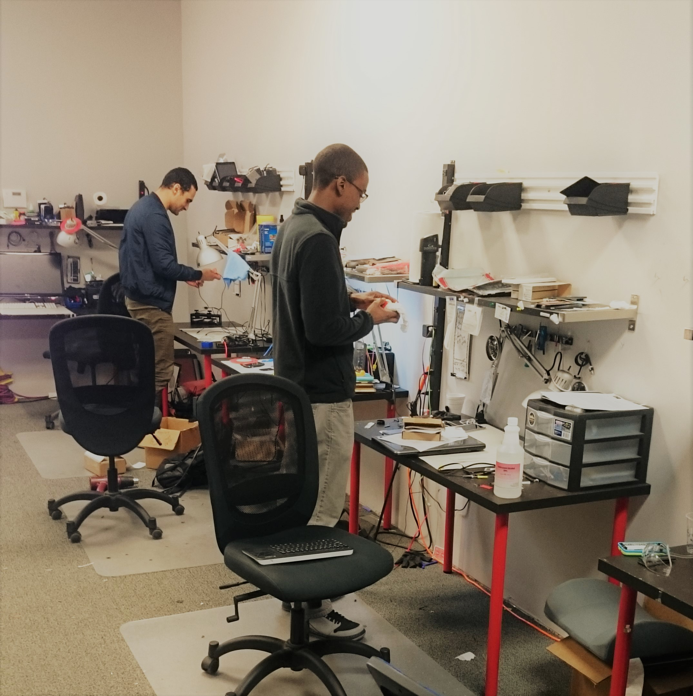
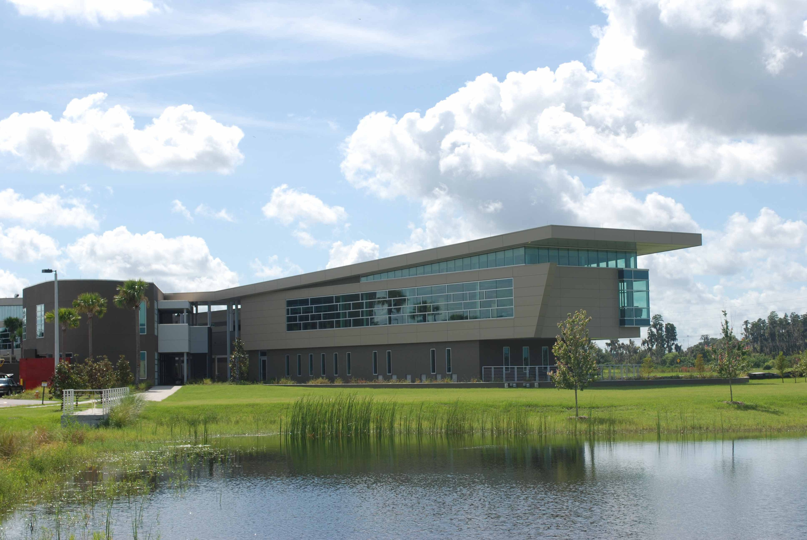
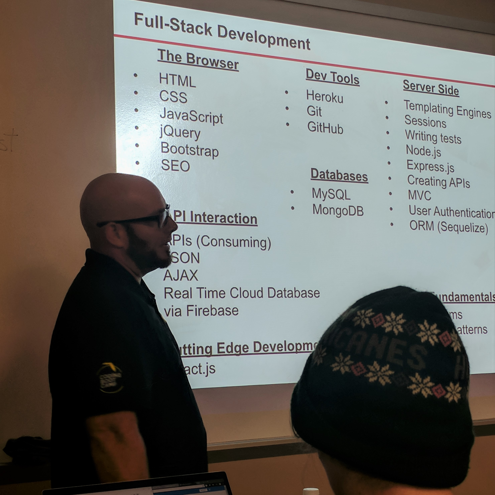

-
Washington & Lee University
I was not always a tech person, In fact I daul majored in international politics & Japanese Language and Literature. However, by my senior year, I decided against pursuing a political career and began searching for other possible career paths. During my final semester of college I took an introduction to Python course and found that I am far more interested in technology than politics.
-
Teaching & Studying in Japan
After graduating from W&L I was still unsure of what to do with my new interest in programming, so I decided to teach English in Japan for a year. While teaching, exploring, and enjoying the many sights of Japan, I continued to work through the exercises in my intro to Python textbook and I began to study HTML and CSS for web design. As I continued to self study, I also voraciously read books and insightful articles on the topic of successfully launching a tech startup. I am inspired by innovators and entrepreneurs, like Elon Musk, developing IoT solutions for the biggest challenges facing the world today.
-
UBREAKIFIX, Arduinos, & My Parents' Garage
On November 10th, 2015 I made my final decision to not work another year in Japan, but to instead return home and help my brother with his Ubreakifix repair shops. The opportunity to work with my brother as well as learn the ins and outs of repairing electronics hardware and software felt like killing two birds with one stone. It was as if I had found a bridge into a tech career as well as a front row seat to learning the real challenges of running a small tech business. Upon returning home, eager to put my Python Coding skills to the test, I also began programming some hello world arduino circuits and testing a recent hydroponic business idea. Using the money I saved working in Japan I walled off a third of my parents garage and fashioned a laboratory for serious and committed research and experimentation.
-
Arduinos, Food Computers, & biofertilizers
.jpg)
Everyday after work and school, for about two years, I was completely engrossed with work in my lab. I quickly grew comfortable programming arduinos to switch lights, fans, and pumps on or off depending on sensor feedback. I treated my time in my lab as more than a pastime, my dream of launching a smart hydroponic equipment company pushed me to learn and build ever better prototypes as fast as I could. With research and time my concept shifted from hydroponic towers to shed size fully automated aquaponic systems, and eventually condensed to a refrigerator sized food computer equipped with a filter of microbes to organically fertilize the enclosed plants. My google drive is overflowing with an expanse of notes ranging from electrical engineering and coding to soil ecology and microbiology. My research last concluded with optimizing the space and equipment in my lab for formulating and fabricating an unique organic fertilizer known as biofertilizers, and I plan to one day launch a biotech manufacturing company in Tampa.
-
Back to School
By mid 2017 I earned my Associates Degree in Engineering Technology at Hillsborough Community College. However, after a few unfruitful months of applying for jobs with my new AS degree, I decided to go all the way for a second BA and enrolled in the computer engineering undergraduate program at Florida Polytechnic University. Florida Poly is an excellent school with great opportunities, but I quickly realized another 4 years of university was not the best route forward for me.
-
UCF Coding Bootcamp
Unwilling to devote another 4 years to seeking a second BA before pursuing a new job, I sought another path to certification and enrolled in the Trilogy UCF Coding Bootcamp in August of 2018. The camp was very intensive and emphasized collaboration and coding real world relevant projects. Since graduating the camp my skills, knowledge, and confidence as a developer have skyrocketed, yet I know my journey as a young junior developer has only just begun.
-
Currently...
Unwilling to devote another 4 years to seeking a second BA before pursuing a new job, I sought another path to certification and enrolled in the Trilogy UCF Coding Bootcamp in August of 2018. The camp was very intensive and emphasized collaboration and coding real world relevant projects. Since graduating the camp my skills, knowledge, and confidence as a developer have skyrocketed, yet I know my journey as a young junior developer has only just begun.